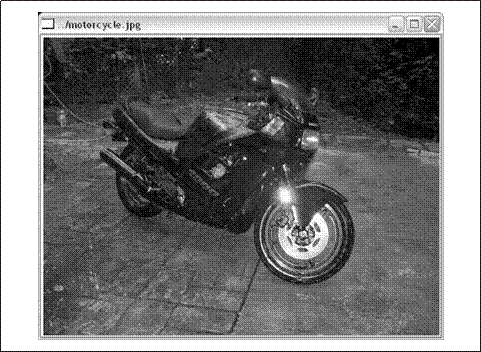

细说HighGUI
一个可移植的图形工具包
OpenCV将与操作系统、文件系统和摄像机之类的硬件进行交互的一些函数纳入HighGUI(high-level graphical user interface)库中。有了HighGUI，我们可以方便地打开窗口、显示图像、读出或者写入图像相关的文件（包含图像与视频）、处理简单的鼠标、光标和键盘事件。我们也可以使用HighGUI创建其他一些很有用的空间，比如滑动条，并把它们加入窗口。如果对自己所使用的系统的图形用户界面非常熟悉，也许会认为HighGUI提供的很多功能是没有必要的，但即使如此，HighGUI的跨平台性对你也会有很大帮助。
我们最初的观点是，OpenCV中的HighGUI可以分为3个部分：硬件相关部分、文件部分以及图形用户界面部分。在仔细研究HighGUI之前，我们先用一些时间分别浏览一下每部分的内容。
硬件部分最主要的就是对于摄像机的操作，在大多操作系统下，与摄像机交互是一件很复杂并且很痛苦的工作。HighGUI提供了一种从摄像机中获取图像的简单方法，所有繁琐的工作都在HighGUI内部完成了，这让我们很开心。
文件系统部分的主要工作就是载入与保存图像文件。HighGUI一个很好的特点就是可以用与读取摄像机视频相同的方法读入视频文件。这使得我们可以省去处理从各种特定设备中读入数据的麻烦，而专心于我们感兴趣的代码部分。同样地，HighGUI为我们提供了
一对函数来读入与保存图像，这两个函数根据文件名的后缀，自动处理所有编码和解码工作。
HighGUI的第三部分是窗口系统（或者称为GUI）。HighGUI提供了一些简单的函数用来打开窗口以及将图像显示在窗口中。它同时给我们提供了为窗口加入鼠标、键盘响应的方法。这些函数为我们快速建立一个简单的应用程序提供了很大的帮助。一种变通的方法，我们可以用滑动条实现切换功能。我们发现使用HighGUI可以实现很多实用的程序。
在本章后面的具体讲解中，我们不会对HighGUI的三个部分分别介绍；而是通过实现一些功能来讲解HighGUI。在这种方式下，你会以最快的速度了解到如何使用HighGUI。
创建窗口
首先，我们要做的是利用HighGUI将一幅图像显示到屏幕上。我们使用cvNameWindow()来实现这个功能。这个函数接受两个参数，第一个参数用来表示新窗口的名称，这个名称显示在窗口的顶部，同时用作HighGUI中其他函数调用窗口的句柄。第二个参数是一个标志，用来表示是否需要使窗口大小自动适应读入的图像大小。下面是这个函数的定义：
int cvNamedWindow(
const char* name,
int flags = CV_WINDOW_AUTOSIZE
);
需要留意的是参数flags，到目前为止，唯一有效的设置是0或者保持默认设置CV_WINDOW_AUTOSIZE。如果使用CV_WINDOW_AUTOSIZE，HighGUI会根据图像的大小调整窗口大小。这样，窗口大小会随着图像的载入而根据图像大小调整，用户没办法手动调整窗口大小。当然，如果不想窗口大小自动调整，也可以将参数值设置为0，这样的话，用户就可以随意调整窗口的大小了。
当窗口被创建以后，我们通常是想加入一些东西到里面。不要着急，在做这些事情之前，我们先看看当不需要这些窗口时，如何释放它们。为了释放窗口，我们需要使用cvDestroryWindow()，这个函数接收一个字符串参数，这个字符串是窗口创建时所指定的名字。
在OpenCV中，窗口根据名称来引用（操作系统独立的）而不是一些“不友好”的句柄。句柄与窗口名称之间的转换都由HighGUI在后台处理，我们不用为这些问
题操心。
话虽如此，还是有些人担心HighGUI内部的处理，那没关系。HighGUI提供了以下函数：
void* cvGetWindowHandle(const char* name);
const char* cvGetWindowName(void* window_handle);
这些函数允许我们在OpenCV所使用的窗口名称与各个窗口系统所使用的窗口句柄之间进行转换。
HighGUI提供了cvResizeWindow()用来调整窗口的大小：
void cvResizeWindow(
const char* name,
int width,
int height
);
这里在宽度与高度是以像素为单位的，指定了窗口中可
以显示部分（这部分的大小可能才是真正关心的）的大小。
载入图像
为了在窗口中显示图像，我们需要了解如何从磁盘中载入图像。OpenCV为我们提供了cvLoadImage()，如下所示：
IplImage* cvLoadImage(
const char* filename,
int iscolor = CV_LOAD_IMAGE_COLOR
);
当打开一幅图像时，cvLoadImage()并不分析文件扩展名，而是通过分析图像文件的前几个字节来确定图像的编码格式。第二个参数iscolor有几个值可以选择。默认
情况下，图像是以每个通道8位，3个通道的形式被读入；可以通过设置CV_LOAD_IMAGE_ANYDEPTH来读入非8位的图像。默认情况下的通道为3，因为参数iscolor的默认值是CV_LOAD_IMAGE_COLOR，这意味着不管原始图像的通道数为多少，都将被转换为3个通道读入。相对于CV_LOAD_IMAGE_COLOR，iscolor也可以被设置成CV_LOAD_IMAGE_GRAYSCALE和CV_LOAD_IMAGE_ANYCOLOR。类似于CV_LOAD_IMAGE_COLOR将读入图像强制转换为3个通道，CV_LOAD_IMAGE_GRAYSCLAE将读入图像强制转换为单通道。CV_LOAD_IMAGE_ANYCOLOR则以保持原始图像通道数的方式读入。这样，为了读入16位的彩色图像，我们需要设置iscolor为CV_LOAD_IMAGE_COLOR|CV_LOAD_IMAGE_ANYDEPTH。
如果想读入数据与原始图像通道数以及位数保持一致，也可以使用CV_LOAD_IMAGE_UNCHAGNED。需要注意的是，当cvLoadImage()读入失败，并不会产生一个运行时错误，而是返回一个空指针。
与cvLoadImage()对应的函数是cvSaveImage()，实现了保存图像功能，cvSaveImage()有两个参数：
int cvSaveImage(
const char* filename,
const CvArr* image
);
第一个参数表示文件名，其中后缀部分用来指定图像存储的编码格式。回忆前一章讲到的，CvArr是一种C语言风格的，功能与面向对象语言中基类类似的结构。当你看到CvArr*时，你可以用IplImage*参数传入。对
于大部分文件格式，cvSaveImage()只能存储8位单通道或者8位3个通道格式的图像。新的文件格式像PNG，TIFF或者JPEG2000允许存储16位甚至浮点类型格式，同样也部分支持4通道格式（BGRA）的图像。当存储成功时，返回1，否则返回0。
显示图像
准备工作做完了，现在让我们来做一些我们一直想做的事情，从磁盘中载入一张图像，并在窗口中显示出来，让我们来享受这一过程吧！为了完成这个功能，我们还需要了解一个简单的函数cvShowImage()：
void cvShowImage(
const char* name,
const CvArr* image
);
第一个参数用来指定用来显示图像的窗口，第二个参数指向需要显示的图像。
现在让我们用前面提到的一些函数完成一个简单的程序。这个程序通过命令行读入文件名，创建窗口并且将图像显示的窗口中。它包括注释和内存清理部分在内，它共有25行！
int main(int argc, char** argv)
{
//Create a named window with the name of the file.
cvNamedWindow("aaa", 1); //"aaa" argv[1]
//Load the image from the given file name.
IplImage* img = cvLoadImage("E:\\Pictures\\man.jpg"); //
//Show the image in the named window
cvShowImage("aaa", img);
//Idle until the user hits the "Esc" key
while(1){
if(cvWaitKey(100)==27)break;
}
//Clean up and don't be piggies
cvDestroyWindow("aaa");
cvReleaseImage(&img);
exit(0);
}
方便起见，我们使用文件名来表示窗口名称。这样处理很好，因为OpenCV默认将窗口名称显示在窗口的顶部，这使得我们可以知道正在看的是哪一幅图像（见图4-1）。这是很容易的一件事。

在进入下一部分前，有一些其他窗口相关的函数需要了解，具体如下：
void cvMoveWindow(const char* name, int x, int y);
void cvDestroyAllWinodws(void);
void cvStartWindowThread(void);
cvMoveWindow()将窗口移动到其左上角为x, y的位置。
cvDestroyAllWindows()是一个很有用的清理函数，用来关闭所有窗口并释放窗口相关的内存空间。
在Linux或者Mac操作系统中，cvStartWindowThread()用来创建一个线程用来自动更新窗口以及处理其他窗口触发事件。返回值为0表示没有创建出线程，如果目前使用的OpenCV版本并不支持这个功能则返回0。注意，如果没有创建一个独立的窗口线程，OpenCV只会在明显式指定的时间里面处理用户交互（这需要程序调用cvWaitKey，在后面的章节会具体描述）。
WaitKey
在前面的创建窗口例子的循环语句中，有一个新的函数我们前面没有看到过：cvWaitKey()。这个函数在一个给定的时间内（单位ms）等待用户按键触发。如果在给定时间内用户按下了一个键，函数返回用户按下的键，否则，返回0。具体使用如下：
while(1){
if(cvWaitKey(100)==27) break;
}
这个程序中，我们告诉OpenCV等待用户触发事件100ms，如果在100ms内没有用户触发，则继续循环；如果有用户触发且按键ASCII码为27（Esc键），则退出循环。这使得用户可以从容地仔细查看图像，直到按Esc键
退出。
提到cvWaitKey()，需要介绍的是cvWaitKey()可以接收0作为参数。在这种情况下，cvWaitKey()会无限期地等待，直到用户触发一个按键。在前面的程序中，可以用cvWaitKey(0)来代替我们的实现。这两者实现的区别在于显示一个视频的时候会体现出来，因为在视频播放过程中，我们希望播放下一帧，即使用户没有触发事件。
鼠标事件
现在我们已经可以显示一张图像给用户，我们现在希望给用户添加一些交互功能。由于我们在窗口环境下工作，而且我们已经知道如何使用cvWaitKey()来捕捉单次用户触发事件，我们下一步需要做的是如何捕捉以及响应鼠标事件。
与键盘事件响应不同，鼠标事件响应采用回调函数的方式来处理。即，为了可以响应鼠标点击事件，首先必须创建一个回调函数，使鼠标点击事件发生时OpenCV可以调用这个函数。创建这个函数以后，需要在OpenCV中注册这个函数，以便特定窗口被触发鼠标事件以后，OpenCV可以正确调用这个函数。
让我们从这个回调函数开始，回调函数callback可以是满
足指定输入参数以及返回参数类型的任何函数。这里，我们必须清楚告诉回调函数触发的事件以及触发位置。函数还需要被告知，用户是否在触发鼠标事件时同时触发了Shift或者Alt等键。下面是回调函数必须符合的格式：
void CvMouseCallback(
int event,
int x,
int y,
int flags,
void* param
);
现在，当回调函数被调用，OpenCV会给函数传入合适的值。第一个参数event必须为表4-1中的一个值。
表4-1：鼠标事件类型
事件名称 |
数值 |
CV_EVENT_MOUSEMOVE |
0 |
CV_EVENT_LBUTTONDOWN |
1 |
CV_EVENT_RBUTTONDOWN |
2 |
CV_EVENT_MBUTTONDOWN |
3 |
CV_EVENT_LBUTTONUP |
4 |
CV_EVENT_RBUTTONUP |
5 |
CV_EVENT_MBUTTONUP |
6 |
CV_EVENT_LBUTTONDBLCLK |
7 |
CV_EVENT_RBUTTONDBLCLK |
8 |
CV_EVENT_MBUTTONONDBLCLK |
9 |
第四个参数flags，每一位指定了在事件发生时的不同状态。例如，CV_EVENT_FLAG_SHIFTKEY的值为16（flags的第五位为1），如果想知道Shift键是否被触发，我们可以用flags与位掩码（1<<4）求与。表4-2列出了所有的标志。
表4-2：鼠标事件标志
标志名 |
数值 |
CV_EVENT_FLAG_LBUTTON |
1 |
CV_EVENT_FLAG_RBUTTON |
2 |
CV_EVENT_FLAG_MBUTTON |
4 |
CV_EVENT_FLAG_CTRLKEY |
8 |
CV_EVENT_FLAG_SHIFTKEY |
16 |
CV_EVENT_FLAG_ALTKEY |
32 |
最后一个参数是一个void指针，可以用来以任何结构方
式传递额外的参数信息。通常情况下，当回调函数为一个类的静态成员时。在这种情况下，可能需要传递这个类的指针以确定对哪一个类实例产生影响。
下面需要注册回调函数到OpenCV中，实现注册的函数是cvSetMouseCallback()，该函数需要三个参数。
void cvSetMouseCallback(
const char* window_name,
CvMouseCallback on_mouse,
void* param = NULL
);
第一个参数指定了回调函数需要注册到的窗口，也就是产生事件的窗口。只有在这个指定的窗口中触发的事件才会调用回调函数。第二个参数为回调函数。第二个参数为回调函数。最后，第三个参数用来传递额外
的信息给前面提到的void* param参数。
在例4-1中，我们实现了一个简单的程序，使得用户可以通过鼠标来画方形。函数my_mouse_callback()用来响应鼠标事件，并且根据event来确定给出的响应。
例4-1：用鼠标在窗口中画方形的程序
void my_mouse_callback(int event, int x, int y, int flags, void* param);
CvRect box;
bool drawing_box = false;
void draw_box(IplImage* img, CvRect rect){ //将rect绘制到img上
cvRectangle( //绘制矩形
img,
cvPoint(box.x, box.y),
cvPoint(box.x + box.width, box.y + box.height),
cvScalar(0xff, 0x00, 0x00)
);
}
int main(int argc, char* argv[])
{
box = cvRect(-1, -1, 0, 0); //给box赋值
IplImage* image = cvCreateImage( //给image赋值
cvSize(200, 200),
IPL_DEPTH_8U,
3
);
cvZero(image); //归零化
IplImage* temp = cvCloneImage(image); //克隆到temp中
cvNamedWindow("Box Example"); //定义一个窗口
cvSetMouseCallback( "Box Example", my_mouse_callback, (void*) image );
while(1){
cvCopy(image, temp); //将image复制到temp
if(drawing_box) draw_box(temp, box);
cvShowImage("Box Example", temp);
if(cvWaitKey(15)==27) break;
}
cvReleaseImage(&image);
cvReleaseImage(&temp);
cvDestroyWindow("Box Example");
}
void my_mouse_callback(int event, int x, int y, int flags, void* param)
{
IplImage* image = (IplImage*)param;
switch(event){ //根据事件来分别执行
case CV_EVENT_MOUSEMOVE:{ //移动
if(drawing_box){
box.width = x-box.x;
box.height = y-box.y;
}
}
break;
case CV_EVENT_LBUTTONDOWN:{ //左键点击
drawing_box = true;
box=cvRect(x, y, 0, 0);
}
break;
case CV_EVENT_LBUTTONUP:{ //左键松开
drawing_box = false;
if(box.width < 0){
box.x += box.width;
box.width *= -1;
}
if(box.height < 0){ //如果box的高度小于0
box.y += box.height;
box.height *= -1;
}
draw_box(image, box); //绘制BOX
}
break;
}
}
• Sliders, Trackbars和Switches
HighGUI为我们提供了slider(滑动条)的实现，在OpenCV中slider称为trackbar(滑动条)。这是因为在OpenCV中加入slider的最初目的是为了实现视频的拖放。当然，在HighGUI中加入了slider以后，trackbar被用作实现各种其他功能（见下一节“无按钮”）！
与窗口一样，滑动条被指定了一个独立的名称（字符串形式），并且后面使用此名称来指定这个滑动条。 HighGUI中创建滑动条的函数如下：
int cvCreateTrackbar(
const char* trackbar_name,
const char* window_name,
int* value,
int count,
CvTrackbarCallback on_change
);
前两个参数分别指定了滑动条的名字以及滑动条附属窗口的名字。当滑动条被创建后，滑动条会被创建在窗口的顶部或者底部。另外，滑动条不会遮挡窗口中的图像。
随后的两个参数之一为value，它一个整数指针，当滑动条被拖动时，OpenCV会自动将当前位置所代表的值传给指针指向的整数；另外一个参数count是一个整数值，为滑动条所能表示的最大值。
最后一个参数是一个指向回调函数的指针，当滑动条被
拖动时，回调函数会自动被调用。这跟鼠标事件的回调函数实现类似。回调函数必须为CvTrackbarcallback格式，CvTrackbarCallback定义如下：
void (*callback)(int position)
这个回调函数不是必须的，所以如果不需要一个回调函数，可以将参数设置为NULL，没有回调函数，当滑动条被拖动时，惟一的影响就是改变指针value所指向的整数值。
最后，HighGUI提供了两个函数分别用来读取与设置滚动条的value值，不过前提是必须知道滑动条的名称。
int cvGetTrackbarPos(
const char* trackbar_name,
const char* window_name
);
void cvSetTrackbarPos(
const char* trackkbar_name,
const char* window_name,
int pos
);
这两个函数可以用在程序的任何地方来读取或设置滑动条的值。
无按钮
不幸的是，HighGUI没有显示提供任何形式的按钮。我们经常使用的方法是，用只有两个取的滑动条来代替按钮。当然也有其他一些取巧的方法。另外一个在…/opencv/samples/c/目录下很多例子中使用的方法是用键盘快捷键来取代按钮。
开关（switch）事实上就是只有两个状态的滑动条，这两个状态是“on”(1)和“off”(0)(当count被设置成1时)。你可以发现使用滑动条来实现按钮功能以及开关是很简单的事情。根据你自己的要求，通过滑动条的回调函数，可以将滑动条的value每次自动设置成0（如例4-2，这跟大多数按钮的行为类似），也可以将其他滑动条的值设置为0（实现类似单选按钮的功能）。
例4-2：使用滑动条实现一个开关功能，用户可以选择打开或关闭。
//We make this value global so everyone can see it.
int g_switch_value = 0;
void switch_off_function() {printf("Pause\n");}; //YOU COULD DO SOMETHING WITH THESE FUNCTIONS TOOvoid switch_on_function() {printf("Run\n");};
//This will be the callback that we give to the trackbar
void switch_callback(int position){
if(position == 0){
switch_off_function();
}else{
switch_on_function();
}
}
int main(int argc, char* argv[]){
IplImage *frame = cvLoadImage("E:\\Pictures\\9d103945-eaa4-4fdf-ac4d-c0cdd67a4e49.jpg", 1); //To hold movie images
CvCapture* g_capture = NULL;
g_capture = cvCreateFileCapture("D:\\FDownload\\0001.哔哩哔哩-【甄嬛传】霸气撕逼扇耳光合集 【杀伐】 （主孙俪）.mp4");
if(g_capture == NULL){ printf("Failed to open %s\n","movie"); return -1; }
//Name the main window
cvNamedWindow("Demo Window", 1);
//Create the tracker. We give it a name,
//and tell it the name of the parent window.
cvCreateTrackbar(
"Switch",
"Demo Window",
&g_switch_value,
1,
switch_callback
);
//This will just cause OpenCV to idle until
//someone hits the "Escape" key.
while(1){
if(g_switch_value){//g_switch_value
frame=cvQueryFrame(g_capture);
if(!frame) break;
}
cvShowImage("Example4_2", frame);
if(cvWaitKey(15)==27) break;
}
cvReleaseCapture( &g_capture );
cvDestroyWindow( "Example4_2" );
return(0);
}
可以看出，程序实现了类似灯开关一样的打开和关闭功能。在示例程序中，滑动条的value被设为0时，回调函数调用switch_off_function()；设为1时，回调函数调用switch_on_function()函数。
视频的处理
处理视频相关问题的时候需要一些函数，当然，首先要用到的就是读/写视频文件的函数。我们也需要知道如何在屏幕上播放视频。
在OpenCV中，处理视频中，我们最先要了解的就是CvCapture。CvCapture结构包含从摄像机或视频文件中读取帧所需的信息。根据视频来源，我们可以使用下面两个函数之一来初始化CvCapture结构。
CvCapture* cvCreateFileCapture(const char* filename);
CvCapture* cvCreateCameraCapture(int index);
当使用cvCreateFileCapture()时，我们只需要将MPG或AVI视频文件名告诉cvCreateFileCapture()，OpenCV
会打开并准备读取视频。如果打开成功，将返回一个指向已经初始化了的CvCapture结构的指针，随后便可以读入视频的帧。
很多人不习惯检查函数返回的结果，想当然的认为不会有问题。请一定要检查返回值。在一些情况下（比如文件不存在）无法打开文件，函数会返回NULL指针；当压缩视频的编码未知时cvCreateFileCapture()也会返回NULL指针。视频压缩编码的具体问题超出了本书的范围，但是为了使视频可以被成功读入，必须确保这种视频解码库已经安装在系统中。比如你想在Windows中读入一些DIVX或者MP4压缩的文件，需要有实现视频编码的DLL文件。这样一样，即使程序可以在一台电脑（安装了所需的DLL文件）上正常运行，但是在其他电脑（未安装所需的DLL文件）上可能会
出现问题。这也就是为什么必须要检查cvCreateFileCapture()函数的返回结果。创建CvCapture结构之后，即可开始读入视频和做很多其他事情。在此之前，让我们看看如何从摄像机中得到图像。
函数cvCreateCameraCapture()的用法与cvCreateFileCapture()非常类似，但是没有处理视频编码解码的麻烦。在这种情况下，可以用identifier指定我们需要使用的摄像机，告诉操作系统如何与摄像机交互。对于前者，我们通过一个整数值来确定要使用的摄像机，当只有一个摄像机时，参数值取0。而与操作系统交互的问题，identifier的domain通过一个整数来告诉OpenCV所使用摄像机的类型。Domain的值可参见表4-3。
表4-3：摄像机参数指定HighGUI如何连接到摄像机
摄像机捕捉常数 |
数值 |
CV_CAP_ANY |
0 |
CV_CAP_MIL |
100 |
CV_CAP_VFW |
200 |
CV_CAP_V4L |
200 |
CV_CAP_V4L2 |
200 |
CV_CAP_FIREWIRE |
300 |
CV_CAP_IEEE1394 |
300 |
CV_CAP_DC1394 |
300 |
CV_CAP_CMU1394 |
300 |
调用函数cvCreateCameraCapture()时，我们将前面提到的两个整数之和传给cvCreateCameraCapture()。例如：
CvCapture* capture = cvCreateCameraCapture(CV_CAP_FIREWIRE);
这段函数表示，cvCreateCameraCapture()会打开第一个Firewire摄像机。只有一个摄像机时，大多数情况下没
有必要使用domain；使用CV_CAP_ANY就很方便。在我们进入下一部分前，提示一个有用的小窍门，当cvCreateCameraCapture()的参数被设置为-1时，OpenCV会打开一个窗口让用户选择需要摄像机。
读视频
int cvGrabFrame(CvCapture* capture);
IplImage* cvRetrieveFrame(CvCapture* capture);
IplImage* cvQueryFrame(CvCapture* capture);
创建一个有效的CvCapture结构之后，便可以开始读视频帧。这里有两种方法。第一种方法是使用cvGrabFrame()，该函数以CvCapture*指针为参数，返回一个整数，当读取帧成功时返回1，否则返回0。cvGrabFrame()将视频帧复制到了一个用户不可见的内存空间里。为什么OpenCV会将视频帧复制到一个用户不可见的空间里？这是因为获取的视频帧数据是未经过处理的，cvGrabFrame()被设计为用于快速将视频帧读入内存。
在cvGrabFrame()以后，可以调用cvRetrieveFrame()来处理cvGrabFrame()读入的视频数据。这个函数会对读入帧做所有必须的处理（包括图像解码操作），并且返回一个IplImage*指针，该指针指向另一块内部内存空间（不要过于依赖这个指针指向的图像，因为cvGrabFrame()下一次调用时，指针所指向的空间会被新的图像覆盖）。如果想对这幅图像做一些特别处理，先将图像数据复制到其他地方。因为这个指针所指向的结构空间由OpenCV管理，所以不要试图释放这个空间，否则会产生一些不可预测的错误。
接下来介绍第二种方法。这种方法比较简单，使用cvQueryFrame()函数。cvQueryFrame()实际上是cvGrabFrame()与cvRetrieveFrame()的一个组合。它与cvRetrieveFrame()返回同样的指针。
值得注意的是，对于一个视频文件，当调用cvGrabFrame()时，视频帧会自动前进一步。所以下一次调用会自动读入下一帧视频。
CvCapture结构使用结束后，可以调用cvReleaseCapture()来释放CvCapture结构。与OpenCV中大部分释放函数类似，这个函数读入一个指向CvCapture*结构的指针。
void cvReleaseCapture(CvCapture** capture);
事实上，我们还可以对CvCapture结构执行很多其他的操作，比如，我们可以查询与设置视频的各种属性：
double cvGetCaptureProperty(
CvCapture* capture,
int property_id
);
int cvSetCaptureProperty(
CvCapture* capture,
int property_id,
double value
);
函数cvGetCaptureProperty()可以接受的参数见表4-4。
表4-4：视频捕捉属性设置
视频捕捉属性 |
数值 |
CV_CAP_PROP_POS_MSEC |
0 |
CV_CAP_PROP_POS_FRAME |
1 |
CV_CAP_PROP_POS_AVI_RATIO |
2 |
CV_CAP_PROP_FRAME_WIDTH |
3 |
CV_CAP_PROP_FRAME_HEIGHT |
4 |
CV_CAP_PROP_FPS |
5 |
CV_CAP_PROP_FOURCC |
6 |
CV_CAP_PROP_FRAME_COUNT |
7 |
大部分属性都可以从名称中看出它的意思。POS_MSEC是指向视频的当前位置，以毫秒为单位。POS_FRAME是以帧为单位的当前位置。POS_AVI_RATIO是介于0至1间的数，表示位置（这在用户使用滑动条拖放视频时很有用处）。FRAME_WIDTH与FRAME_HEIGHT是当前读取的帧（或者当前从摄像机捕获的帧）的宽度与高度。FPS是针对视频文件来说的，它记录了视频录入时每秒钟的帧数。这个参数用来以正确的速度播放视频。FOURCC由四个字节组成，表示视频文件的压缩方法。FRAME_COUNT表示视频文件的总帧数，但是这个数据不是非常可靠。
前面所有参数都以double类型返回，这对大部分都适用，除了参数为FOURCC（FourCC）[FourCC85]的情况。
例4-3：获得视频编码格式
int main(int argc, char* argv[]){
IplImage *frame = cvLoadImage("E:\\Pictures\\9d103945-eaa4-4fdf-ac4d-c0cdd67a4e49.jpg", 1); //To hold movie images
CvCapture* g_capture = NULL;
g_capture = cvCreateFileCapture("D:\\FDownload\\0001.哔哩哔哩-【甄嬛传】霸气撕逼扇耳光合集 【杀伐】 （主孙俪）.mp4");
if(g_capture == NULL){
printf("Failed to open %s\n","movie");
return -1;
}
//Read the properties double f = cvGetCaptureProperty( g_capture, CV_CAP_PROP_FOURCC );
char* fourcc = (char*) (&f);
printf("Properties of %s are:\n","movie"); printf("FORCC = %d | %d | %d | %d |\n",fourcc[0],fourcc[1],fourcc[2],fourcc[3]); cvReleaseCapture( &g_capture ); getchar(); return 0;
}
对于前面每一个视频捕捉属性，有一个对应的函数cvSetCaptureProperty()来设置这些属性。这些不是全部有效的，比如，读入视频文件时不可以设置FOURCC属性。通过设置当前位置来从不同位置读入视频应该是可行的，但是只对一部分编码格式有效（第5章将更详细地介绍视频编码和解码问题）。
写视频
我们对视频的另一个操作就是将视频写入磁盘。OpenCV使这件事情非常简单。除了个别细节，大致与读入视频一致。
首先必须创建一个CvVideoWriter结构。CvVideoWriter是一个类似于CvCapture的视频写入结构。此结构与下面的函数一起使用。
CvWriter* cvCreateVideoWriter(
const char* filename,
int fourcc,
double fps,
CvSize frame_size,
int is_color=1
);
int cvWriteFrame(
CvVideoWriter* writer,
const IplImage* image
);
void cvReleaseVideoWriter(
CvVideoWriter** writer
);
你会注意到，相比视频读入，视频写入需要一些额外的参数。除了视频文件名称，我们需要告诉视频写入结构视频编码格式、帧率以及每一帧的大小。还可以告诉OpenCV图像是否彩色（默认为彩色）。
这里，四个字符标记来表示编码格式。（不了解视频编码的读者此时只需知道这是一个标识编码的四字节惟一性标志）int类型的cvCreateVideoWriter()参数fourcc是将四个字符被打包在一个整数中。由于经常使用，
OpenCV提供了一个宏CV_FOURCC(c0, c1, c2, c3)来实现这个打包操作。
视频写入结构建好之后，需要调用cvWriteFrame()函数，并且为cvWriteFrame()函数传入一个CvVideoWriter*指针和一个IplImage*指针来写入文件。
写入完成后，为了关闭写入结构，必须调用CvReleaseVideoWriter()函数。如果平时不习惯释放不再使用的空间和结构，对这个结构千万别偷懒，因为不显式地释放写入结构，视频文件可能会被损坏。
ConvertImage函数
完全由于历史原因，HighGUI中有一个孤立的函数，独立于前面的任何一类。但此函数使用广泛，其重要性不言而喻，它便是cvConvertImage()。
void cvConvertImage(
const CvArr* src,
CvArr* dst,
int flags = 0
);
cvConvertImage()用于在常用的不同图像格式之间转换。文件格式在src与dst图像的头文件中指出（该函数还允许使用比IplImage更通用的CvArr类型）。
源图像可以是单个、3个或者4个通道，可以是8位或者
浮点类型像素格式。目标图像必须是8位的单通道或者3个通道。函数也可以将彩色图像转换为灰度图或者将单通道的灰度图转换为3个通道的灰度图（彩色）。最后，参数flags可以垂直旋转图像。这是很有用的，有时候摄像机图像格式与图像显示格式会反转。设置这个参数可以在内存中彻底旋转图像。